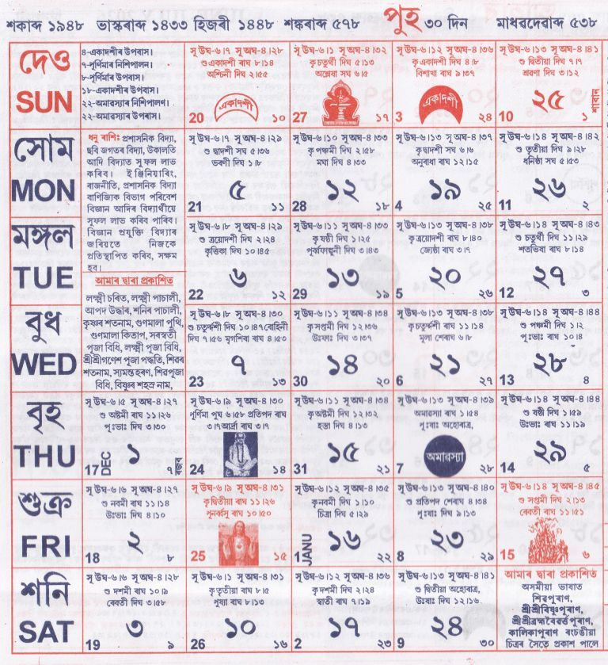

|
পুহ
|
|

|
১ পুহ - সত্ৰ তিথি অনুষ্ঠান।
২ - জাতীয় চেতনা দিৱস, পষেক আৰম্ভ।
৩ - সত্ৰ তিথি অনুষ্ঠান।
৪ - স্মৃতি অনুষ্ঠান, খানকাহ উৎসৱ।
৫ - সমাজকৰ্ম্মী স্মৃতি, স্বামী প্রণবানন্দ তিথি।
৬ - জ্যোতিষী স্মৃতি।
৭ - বৈষ্ণৱাচাৰ্য্য তিথি উৎসৱ।
৮ - নলিনী বালা দেবী স্মৃতি দিৱস।
৯ - বৰদিন (Christmas)।
১০ - সত্ৰ প্ৰতিষ্ঠাপক তিথি।
১১ - অসম সাহিত্য সভা প্ৰতিষ্ঠা দিৱস।
১২ - বিভিন্ন সত্ৰত তিথি অনুষ্ঠান।
১৪ - ভট্টদেৱ স্মৃতি।
১৫ - সত্ৰ অনুষ্ঠান।
১৬ - নতুন বছৰ (2027) আৰম্ভ।
১৭ - ৰাষ্ট্ৰীয় যুব দিৱস।
১৮ - সত্ৰাধিকাৰ স্মৃতি।
১৯ - সত্ৰ অনুষ্ঠান।
২১ - পূজা মহোৎসৱ (৪ দিনীয়া)।
২২ - সত্ৰ তিথি অনুষ্ঠান।
২৩ - সত্ৰাধিকাৰ স্মৃতি।
২৪ - সভাৰম্ভ অনুষ্ঠান।
২৬ - বিভিন্ন সত্ৰত তিথি অনুষ্ঠান।
২৭ - স্বামী বিবেকানন্দ জন্ম দিৱস।
২৮ - সত্ৰ তিথি অনুষ্ঠান।
২৯ - উৰুকা মহোৎসৱ।
৩০ - মাঘ বিহু, মেজি দাহ, সূৰ্য্যাগ্নি পূজা, ভোগালী উৎসৱ।
|
|
ৰবিশুদ্ধি: কৰ্কট, তুলা, কুম্ভ, মীন; ১৩ পুহৰ পৰা মেষ, কৰ্কট, সিংহ, তুলা, বৃশ্চিক, কুম্ভ আৰু মীন।
|
|
গুৰুশুদ্ধি: মেষ, কৰ্কট, তুলা, ধনু আৰু কুম্ভ।
|
|
জ্যোতিষতত্ত্ব: এই মাহত জন্মা ব্যক্তি শিক্ষাপ্ৰৱণ, বুদ্ধিমান আৰু পৰামৰ্শদাতা স্বভাৱৰ হয়। শুভ কর্ম সাধাৰণতে নিষিদ্ধ।
|
শুভকাৰ্য্য:
নামকৰণ: ৯, ১৪, ২৯
মুখ্যান্নপ্ৰাশন: ২৫
গৃহপ্ৰৱেশ: ১, ২, ১৩, ২৫, ২৬, ২৭, ২৮, ২৯, ৩০
হালখতি: ৪, ৮, ১৮, ২২, ৩০
|